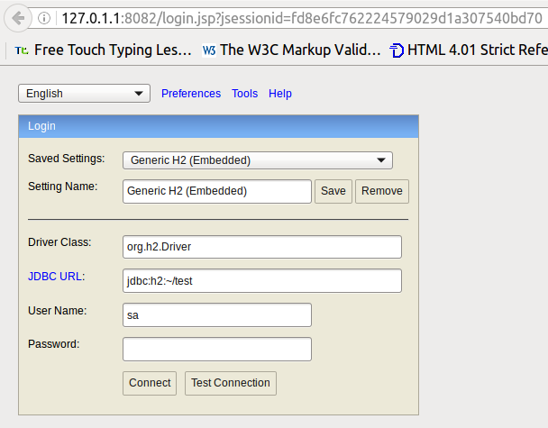
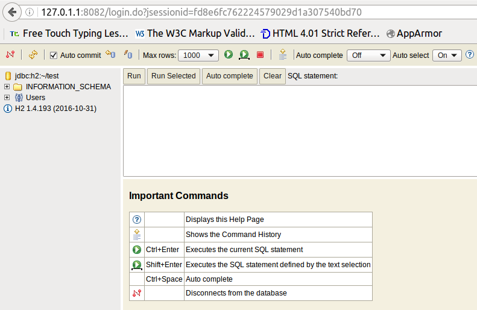
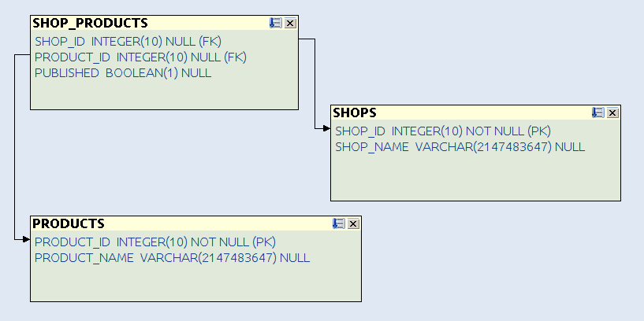
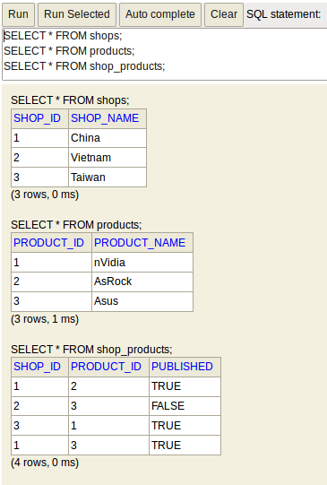
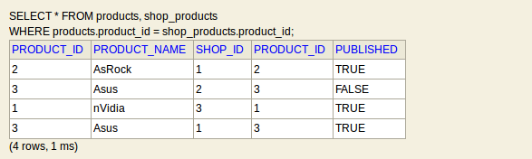
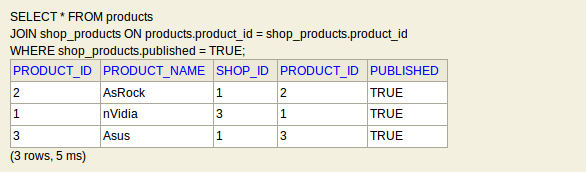
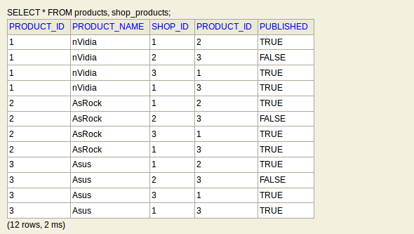
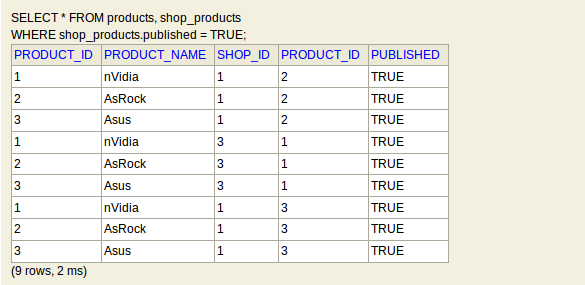

В Интернете есть куча статей про SQL. И про JOIN уже сказано немало. Но все равно, когда
читаешь документацию или чьи-то статьи, ничего не понятно. Т.е. вроде бы понятно, но не полностью. Особенно
для таких как я, кто знает SQL на уровне SELECT * FROM ...
В качестве СУБД, на которой будем тренироваться, возьмем H2 Database. Эта СУБД хорошо подходит для обучения, по крайней мере, ничего устанавливать не надо (нужно только иметь установленную Java). Итак, скачаем и установим H2:
cd /tmp && \ wget 'http://www.h2database.com/h2-2016-10-31.zip' && \ unzip h2-2016-10-31.zip && \ cd h2/bin/ && \ chmod a+x --verbose h2.sh
Теперь запустим СУБД:
./h2.sh
В Web-браузере откроется страница как на рисунке 1.

Здесь сразу нажмем на Connect. После чего откроется Web-консоль, изображенная на рисунке 2, в которой можно писать запросы и выполнять их.

В качестве примера рассмотрим Интернет-магазин. Сейчас полным-полно магазинов, которые всего лишь переправляют товары из Азии в другие страны. Будем хранить сведения о поставщиках в таблице shops:
CREATE TABLE shops ( shop_id INTEGER PRIMARY KEY, shop_name VARCHAR );
Для информации о товарах заведем таблицу products.
CREATE TABLE products ( product_id INTEGER PRIMARY KEY, product_name VARCHAR );
Теперь сопоставим поставщиков и поставляемые ими товары с помощью таблицы shop_products. Отношение между поставщиками и товарами будет многие-ко-многим. Поле published отвечает за наличие/отсутствие товара у поставщика.
CREATE TABLE shop_products ( shop_id INTEGER, product_id INTEGER, published BOOLEAN, FOREIGN KEY (shop_id) REFERENCES shops(shop_id), FOREIGN KEY (product_id) REFERENCES products(product_id) );
Получится структура, изображенная на рисунке 3.

Пусть у нас будет 3 магазина (т.е. 3 поставщика из Азии):
INSERT INTO shops (shop_id, shop_name) VALUES (1, 'China'); INSERT INTO shops (shop_id, shop_name) VALUES (2, 'Vietnam'); INSERT INTO shops (shop_id, shop_name) VALUES (3, 'Taiwan');
Пусть у нас в каталоге будет 3 товара:
INSERT INTO products (product_id, product_name) VALUES (1, 'nVidia'); INSERT INTO products (product_id, product_name) VALUES (2, 'AsRock'); INSERT INTO products (product_id, product_name) VALUES (3, 'Asus');
Больше всех стараются китайцы, они производят два продукта: AsRock и Asus. В то время как Вьетнам и
Тайвань - только по одному. Самый популярный продукт - Asus. Его производят в двух странах: Китай и Вьетнам
(это для разнообразия, чтобы было видно, как работает JOIN).
INSERT INTO shop_products (shop_id, product_id, published) VALUES (1, 2, TRUE); INSERT INTO shop_products (shop_id, product_id, published) VALUES (2, 3, FALSE); INSERT INTO shop_products (shop_id, product_id, published) VALUES (3, 1, TRUE); INSERT INTO shop_products (shop_id, product_id, published) VALUES (1, 3, TRUE);
Содержимое тестовой БД приведено на рисунке 4.

Выберем все возможные комбинации товаров (т.е. все товары всех поставщиков). Будем использовать
WHERE для того, чтобы не спутать строки из разных таблиц.
SELECT * FROM products, shop_products WHERE products.product_id = shop_products.product_id;
Этот подход рабочий, но не очень наглядный. Особенно если критериев WHERE много: какой из них
нужен для "склеивания" данных из нескольких таблиц, а какой - для фильтрации данных по значениям какого-либо
поля? Как бы то ни было, результат приведен на рисунке 5.

Сделаем то же самое, что и в примере 1, только с помощью "настоящего"
JOIN.
SELECT * FROM products JOIN shop_products ON products.product_id = shop_products.product_id;
В запросе явно сказано: взять все строки из таблицы products, затем каждую строку из таблицы
products сопоставить с каждой строкой из таблицы shop_products (а именно
сопоставить поля product_id). Как видно из рисунка 6, результат
получился таким же, как и на рисунке 5.
Этот пример - усложненная версия примера 2. Выберем все возможные товары, но только те, что есть в наличии.
SELECT * FROM products JOIN shop_products ON products.product_id = shop_products.product_id WHERE shop_products.published = TRUE
Работает это так:
products.
shop_products, но "склеиваем" только те строки, у которых одинаковые значения поля
product_id. На этом этапе получается таблица из 4 строк и 5 столбцов (столбец
product_id встречается в двух изначальных таблицах, но после JOIN
остается один экземпляр).
published равно TRUE.

Попробуем сделать то же самое, что и в примере 3, но без JOIN.
SELECT * FROM products, shop_products WHERE shop_products.published = TRUEВ итоге получится таблица из 9-ти строк и 6-ти столбцов (см. рисунок 9). Почему 9 строк? Потому что, если не задействован
JOIN
(или WHERE table_a.id = table_b.id), результат будет произведением 1-ой таблицы на 2-ую (такое
произведение как-то по-умному называется, не помню как именно, главное что в результате получатся все
сочетания без ограничений по ключам, т.е. "каждый с каждым". Работает это так:
products мы вставили 3 записи, а в таблицу
shop_products - 4 записи) - изображена на рисунке 8.

published равно TRUE.

product_id
встречается дважды...
JOIN не обойтись.
Впрочем, "наивный" запрос (зачастую он ошибочный) сразу проявит себя. Пусть таблица A связана с
таблицей B, которая в свою очередь связана с таблицей C. Если в каждой из таблиц несколько сотен
тысяч записей, сколько ресурсов потребуется СУБД, чтобы "перемножить" 3 таблицы?..
__________
* все совпадения тестовых данных с реальными торговыми марками являются случайными :)